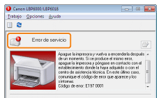
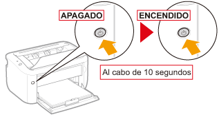
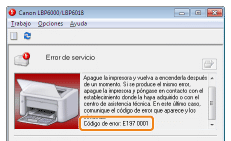

Si aparece <Error de servicio> en la Ventana de estado de impresora, lleve a cabo el siguiente procedimiento para apagar y encender la impresora.
1
Apague la impresora, espere durante 10 segundos o más y después enciéndala de nuevo.
Si no vuelve a aparecer el mensaje, la impresora estará preparada.

|
Si vuelve a aparecer el mensaje, necesitará solicitar servicio.
Lleve a cabo el procedimiento que se presenta a continuación y luego póngase en contacto con su distribuidor autorizado local de Canon para solicitarle servicio. |
2
Anote el código de error mostrado en la Ventana de estado de impresora.

3
Apague la impresora y, a continuación, desconecte los cables de la misma.

<Cómo desconectar los cables>
|
Cable USB
|
(2) Apague el ordenador.
(3) Desconecte el cable de la impresora.
|
|
Cable de alimentación
|
(4) Desconecte el enchufe de la toma de corriente de CA.
(5) Desconecte el cable de alimentación de la impresora.
|
4
Póngase en contacto con su distribuidor autorizado local de Canon para solicitarle servicio.
Cuando se ponga en contacto con su distribuidor de Canon, comuníquele asimismo el código de error anotado en el paso 2.
 |
Si no está seguro de cuál es el problema, póngase en contacto con su distribuidor autorizado local de Canon.
|